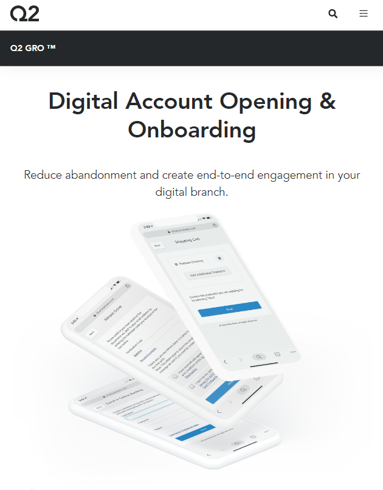
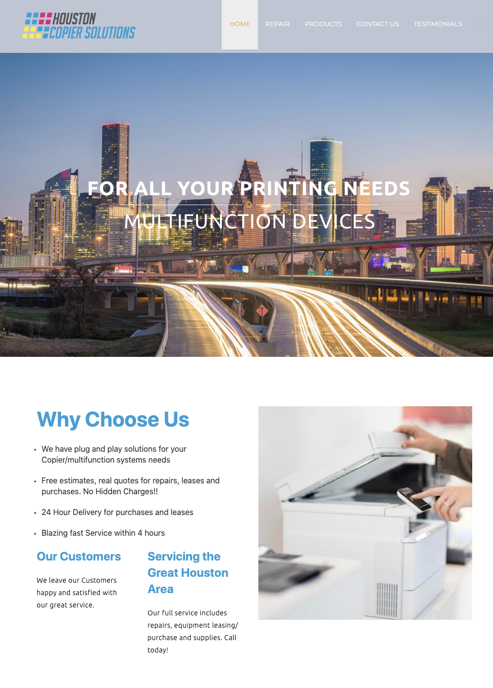
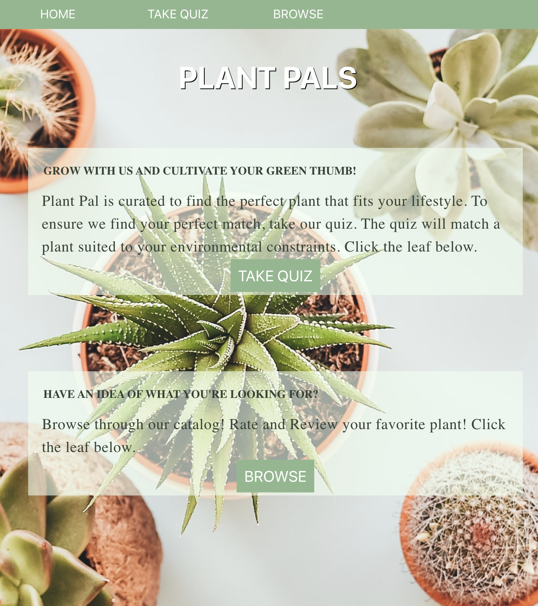
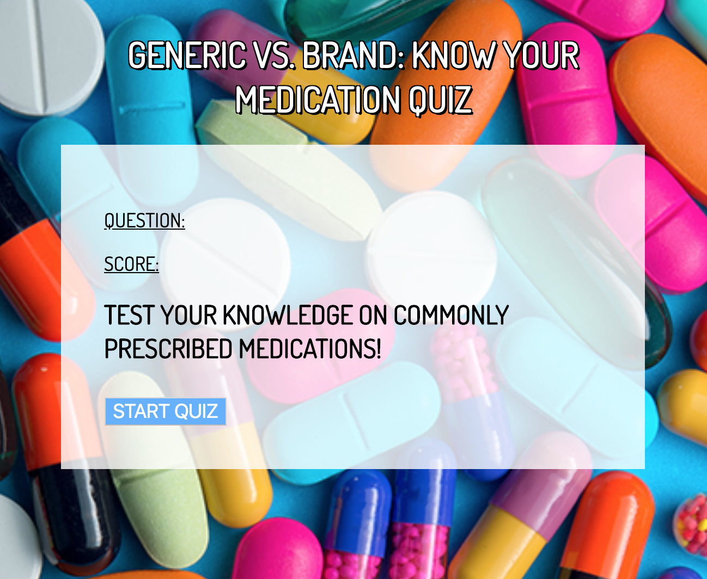

Skills and Tools
The following is a list of languages, frameworks, and platforms I have experience with and have used for previous projects and applications!
I am an Application Engineer eager to assist a team in optimizing and maintaining web functionality to cutting-edge web applications and technologies. I am a graduate from the University of Texas at Austin with A Bachelor's degree in Sociology. I gained many of my skills and experiences via the Thinkful Engineering Immersion Bootcamp. An avid coffee drinker and nature explorer, I have made Austin my home for the past seven years! My interest in web development stemmed from the mantra that as an engineer you are a student for life, constantly learning and solving new challenges. My goal is to use the technical knowledge I've gained thus far to enhance user-focused websites and applications while also incorporating my creativity in every project I am a part of!
Download ResumeThe following is a list of languages, frameworks, and platforms I have experience with and have used for previous projects and applications!
Currently employed at Q2 Digital Banking as an L2 Application Support Engineer for the Gro Account Opening product. I collaborate directly with clients to troubleshoot and resolve problems of complex nature such as code defects, product configurations, networking, platform, hardware configuration, and other issues encountered in the system operation within their environment. I assist clients in customizing Gro web application front end configuration such as custom fields and improving overall product usability. I utilize AWS services and Splunk Observability to monitor user logs and review internal software processes
Currently I am providing freelance webpage maintence for Houston Copier Solutions, a local business located in Houston, Texas. When taking on this company, I gained experience in Wordpress Software as well as applied my knowledge in javascript and css to improve the usability of the website.
"The purpose of this application is to assist the user find an indoor plant based on their needs and other users' experiences. The user is able to browse through a directory of indoor plants where basic a summary of each plant is listed. The user may also read and leave reviews. A short quiz is also implemented as a tool for users to find a plant match."
“Generic VS. Brand” is a short and simple quiz application that tests the users’ knowledge. The app utilizes the following technologies: Jquery, JavaScript, HTML, and CSS. The entire project was then pushed to Github.
"The purpose of this application is to connect the user to upcoming music events/attractions while simultaneously presenting suggested artists/bands the user may also enjoy. The goal is to connect the user to new music experiences. This is achieved by using two popular APIs: TicketMaster and TastDive."